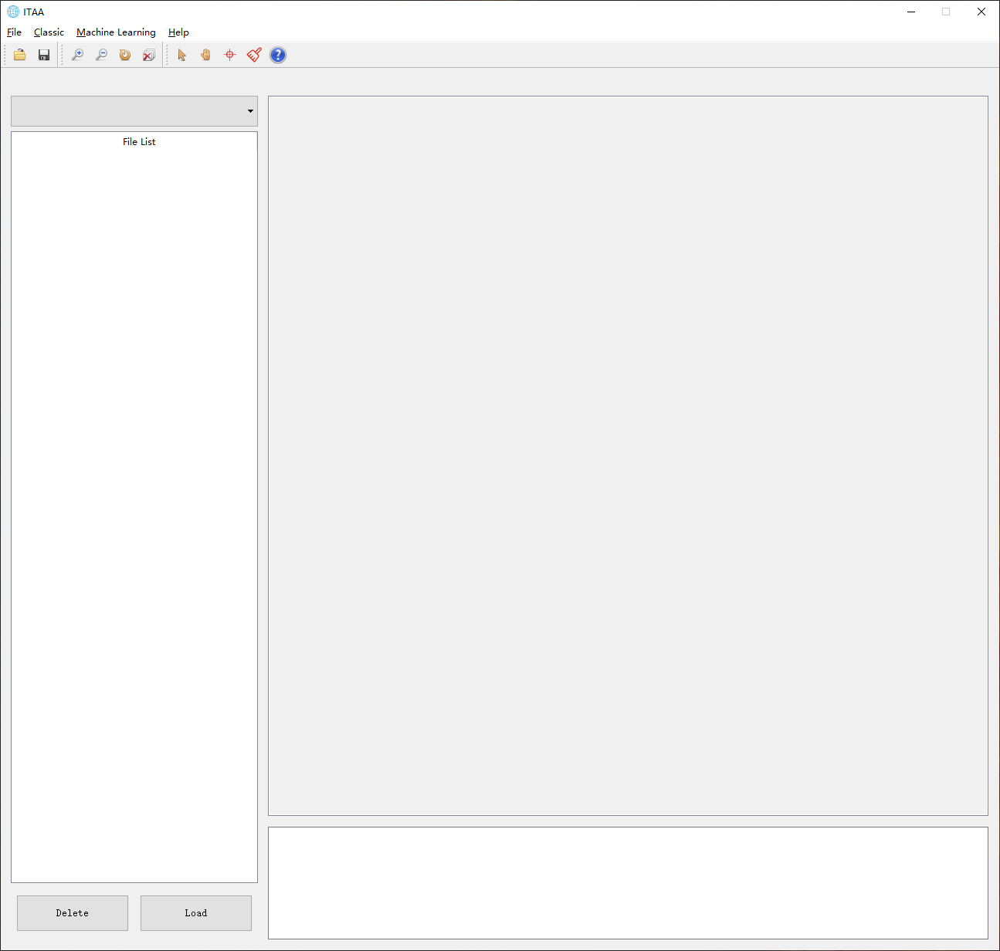
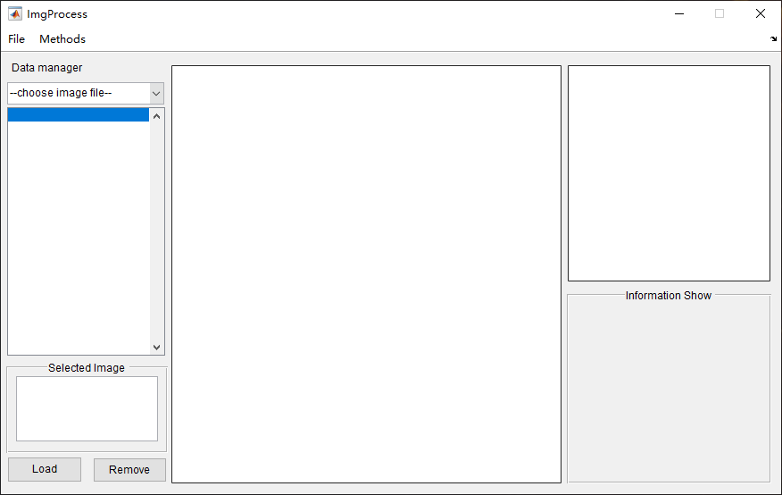
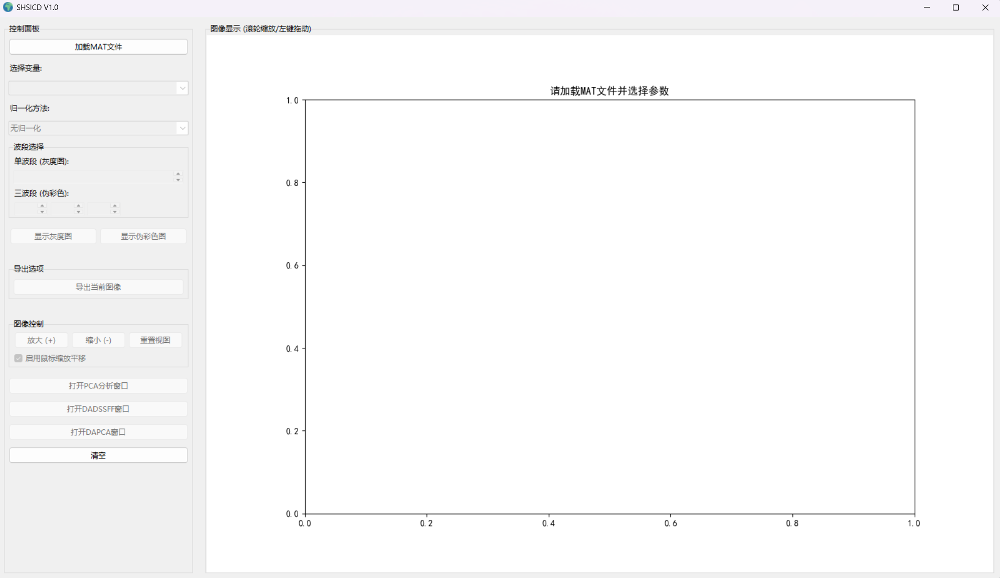
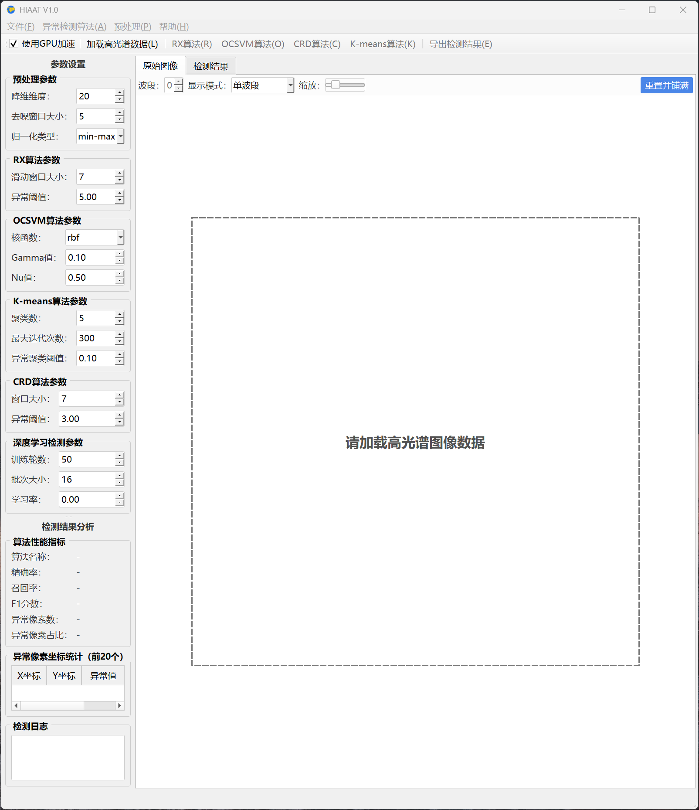

Biography
Zengfu Hou (侯增福) earned his Ph.D. from Beijing Institute of Technology (BIT) in June 2023, majoring in Information and Communication Engineering. From July 2023 to June 2025, he was employed by Beijing Honor Terminal Co., Ltd. as a senior engineer in graphics and image algorithm. He is currently a lecturer at the School of Information and Electrical Engineering, Hebei University of Engineering (HUE). His research interests are pattern recognition and hyperspectral image processing, including anomaly detection, target detection, change detection and object tracking, and image quality assessment.
Education
- Ph.D. in Information and Communication Engineering, Beijing Institute of Technology, 2023
Experience
- Lecturer, School of Information and Electrical Engineering, Hebei University of Engineering, 2025–present
- Senior Engineer (Graphics and Image Algorithm), Beijing Honor Terminal Co., Ltd., 2023–2025
Publications
Journal Publications
-
SiamBAG: Band Attention Grouping-based Siamese Object Tracking Network for Hyperspectral VideosIEEE Transactions on Geoscience and Remote Sensing, 2023 Corresponding
-
Spatial-spatial Weighted and Regularized Tensor Sparse Correlation Filter for Object Tracking in Hyperspectral VideosIEEE Transactions on Geoscience and Remote Sensing, 2022, vol. 60
-
Hyperspectral Change Detection Based on Multiple Morphological ProfilesIEEE Transactions on Geoscience and Remote Sensing, 2022, vol. 60
-
Collaborative Representation with Background Purification and Saliency Weight for Hyperspectral Anomaly DetectionScience China Information Sciences, 2022, 65(1):1–12
-
Three-Order Tucker Decomposition and Reconstruction Detector for Unsupervised Hyperspectral Change DetectionIEEE JSTARS, 2021, vol. 14, pp. 6194–6205
-
Multipixel Anomaly Detection With an Unknown Pattern for Hyperspectral ImageryIEEE TNNLS, 2022, vol. 33, no. 10, pp. 5557–5567
-
Hyperspectral target detection based on transform domain adaptive constrained energy minimizationInternational Journal of Applied Earth Observation and Geoinformation, 2021, 103: 102461
-
Anomaly Detection for Hyperspectral Imagery Based on the Regularized Subspace Method and Collaborative RepresentationRemote Sensing, 2019, 11(11): 1318 Co-first
-
Anomaly detection in hyperspectral imagery based on low-rank representation incorporating a spatial constraintRemote Sensing, 2019, 11(13): 1578 Co-first
-
Hyperspectral Imagery Anomaly Detection based on Band Selection and Learning DictionaryRemote Sensing for Land and Resources, 2019, 31(1), 33–41
-
A Spectral-Spatial Fusion Anomaly Detection Method for Hyperspectral ImageryPreprint
-
A Joint Morphological Profiles and Patch-Tensor Change Detection for Hyperspectral ImageryPreprint
Conference Publications
-
A Patch Tensor-based Change Detection for Hyperspectral ImagesIEEE IGARSS, 2021, pp. 4328–4331
-
A Background Refinement Collaborative Representation Method with Saliency Weight for Hyperspectral Anomaly DetectionIEEE IGARSS, 2020, pp. 2412–2415
-
Novel Hyperspectral Anomaly Detection based on Unsupervised Regularized SubspaceISPRS Archives, 2018, 42(3)
-
An Improved Unsupervised Nearest Regularized Subspace Method for Hyperspectral Anomaly DetectionInternational Conference on Advanced Remote Sensing, 2018
Software Development
The following are some software tools developed in recent years based on Python and MATLAB. All rights reserved. Currently, these are protected by copyright, and some have been delivered to enterprise departments for application.
HRSATD
Development for hyperspectral imagery anomaly detection and target detection. [Python]

ITAA
Development for infrared imagery testing and analysis access. [Python]

ImgProcess
Development for infrared small target detection. [MATLAB]

SHSICD
Development for hyperspectral change detection. [Python]

HIAAT
Development for hyperspectral anomaly detection. [Python]
Professional Affiliations
Served as an active reviewer for the following journals and conferences:
- IEEE Transactions on Image Processing (TIP)
- IEEE Transactions on Geoscience and Remote Sensing (TGRS)
- IEEE Journal of Selected Topics in Applied Earth Observations and Remote Sensing (JSTARS)
- IEEE Geoscience and Remote Sensing Letters (GRSL)
- IEEE Signal Processing Letters (SPL)
- Infrared Physics and Technology (INFPHY)
- IET Image Processing
- International Journal of Atmospheric and Oceanic Sciences
- International Conference on Computer Science and Application Engineering (CSAE 2022)
- IEEE International Geoscience and Remote Sensing Symposium (IGARSS 2025, IGARSS 2026)